Module 2 Part 2 – Advanced Hydraulic Structures
Contents
Module 2 Part 2 – Advanced Hydraulic Structures#
Overview
This tutorial will illustrate how to use QGIS table editor and the FLO-2D plugin to manage and edit culvert data.
Required Data
The required data is in Module 1 and 2
File |
Content |
|---|---|
*.qgz |
QGIS Project files |
*.gpkg |
Geopackage |
*.tif |
Elevation file |
*.shp |
Culvert shapefiles |
Note
The accompanying YouTube video shows several more advanced ideas for modeling culverts. The tutorial focus is on the generalized culvert equation.
Advanced channel culvert modeling
Simple storm drain
When to use tailwater switches.
How to use the head reference elevation.
Step 1: Setup the project#
Get the data: https://flo-2d.sharefile.com/d-s05913b9b6c0149c1a93cec4fe52d7bb5
Download and extract the data from the link above.
Open QGIS and drag the lesson 1d.qgz file into the project.
Save the project.

Step 2: Review culvert 009#
Zoom to the northeast basin as shown by the yellow box.
Find the culvert.
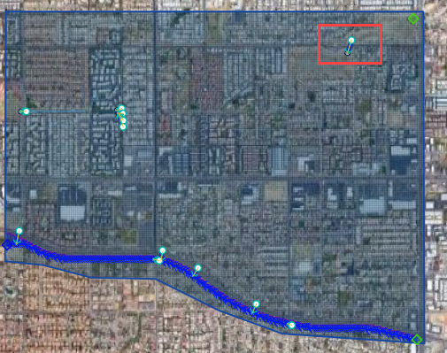
Turn on the Elevation layer and set the elevation style to hillshade. If the elevation layer is missing, load it from lesson 1.
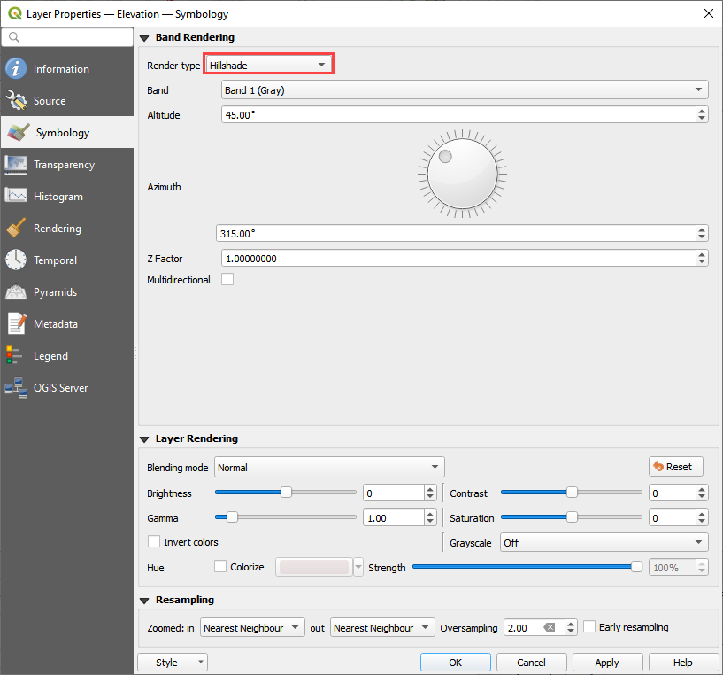
Notice the blue polygon. It covers the centroid of the grid. The gif shows how to build one. This polygon is used identify the grid that needs an elevation correction. It can be more than one but in this case 1 is sufficient.
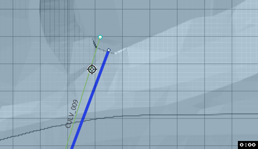
The elevation correction will be applied in a later step. Step 2.4 sets shows how to set up the correction.
Click the measure tool and measure the length of the culvert.
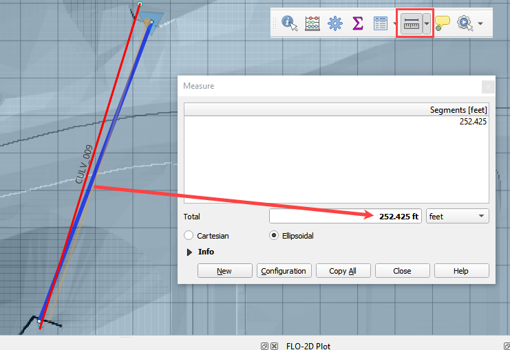
Review the culvert geometry.
Circular pipe culvert
48” diameter
3 barrels
Square headwall
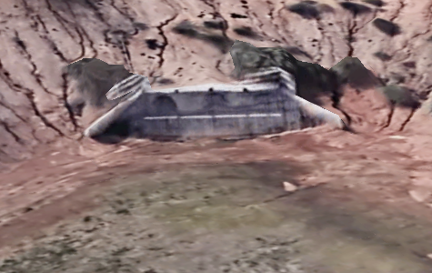
Step 3: Complete the structure data#
Select CULV_009 in the structure editor.
Rating = Culvert equation
Length = 252ft
Diameter = 4ft
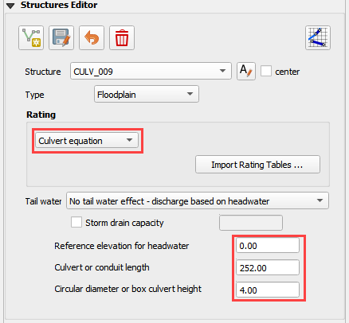
TYPEC = 2 circular pipe.
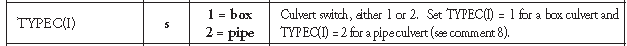
TYPEEN = 1 square edge with headwall.
CULVERTN = 0.018
KE = 0.50
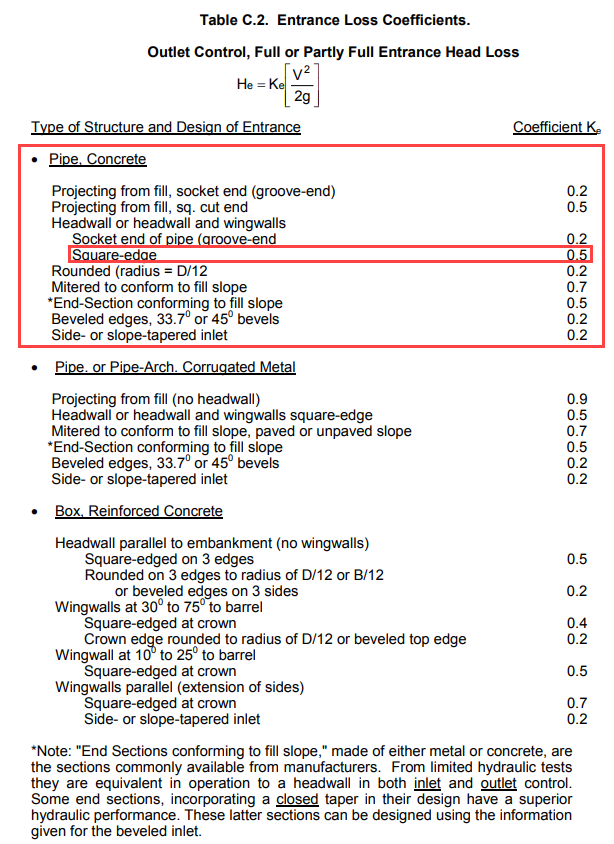
source: Hydraulic Design of Highway Culverts - HDS-5-Third Edition
CUBASE = 0ft
MULTBARRELS = 3
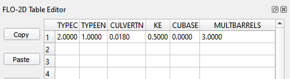
Step 4: Review culvert 122#
Check the Center box and change the structure to CULV_122.
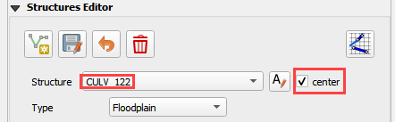
The map is centered on the CULV_122.
In this culvert, the elevation polygon was applied to the whole basin.
Note how the blue polygon covers the centroid of the cells that will be modified. This correction is applied to the attenuation basin and the stilling basin.
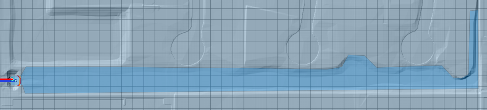
The culvert has a stilling basin just upstream with a levee applied to control the water surface. The grid element elevation is set to min by the blue polygon and the levee elevation is set to the crest of the weir. The water will flow over the levee and fill the stilling basin before it flows through the culvert.
The levee elevation is 1396.48ft.
The culvert length 100ft.
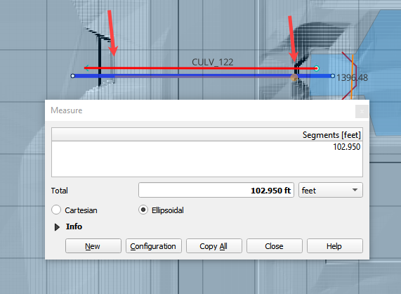
The entrance type is box culvert with wingwalls 30 to 70 degrees.
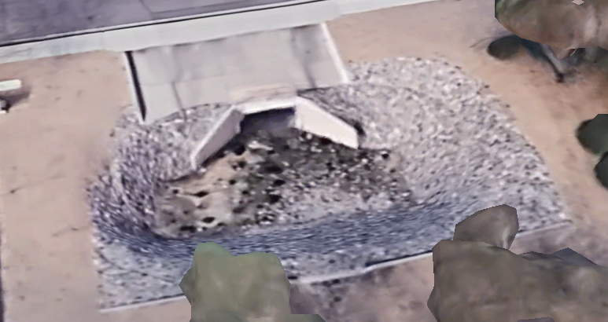
Step 5: Complete the structure data#
Select CULV_122.
Rating = Culvert equation
Length = 100ft
Diameter = 5ft
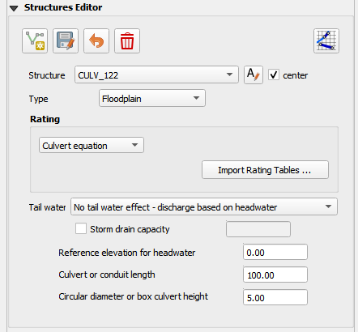
The culvert dimensions
TYPEC = 1 Box culvert
TYPEEN = 1 Wingwall 30 to 70 Square Head at Crown
CULVERTN = 0.018
KE = 0.4
CUBASE = 8ft
MULTBARRELS = 1
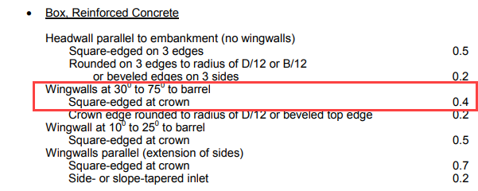
Step 6: Save, export, and run.#
Note
The accompanying YouTube video shows several more advanced ideas for modeling culverts.
Advanced channel culvert modeling
Simple storm drain
When to use tailwater switches.
How to use the head reference elevation.
Save the project.

Export the data files to the Advanced Class Folder Module 2 Export.

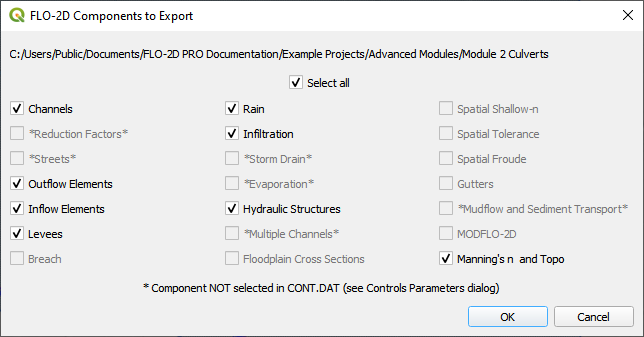
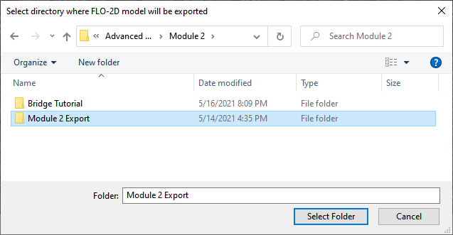
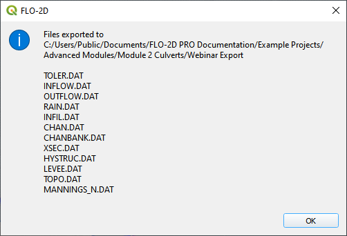
Click the Run FLO-2D Icon.

Click OK to start the simulation.
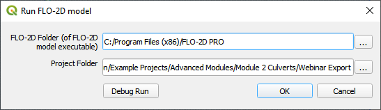
Note
The end of the YouTube video will cover hydraulic structure review.